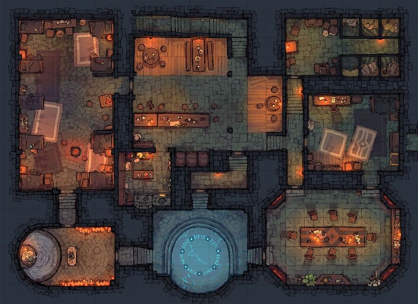
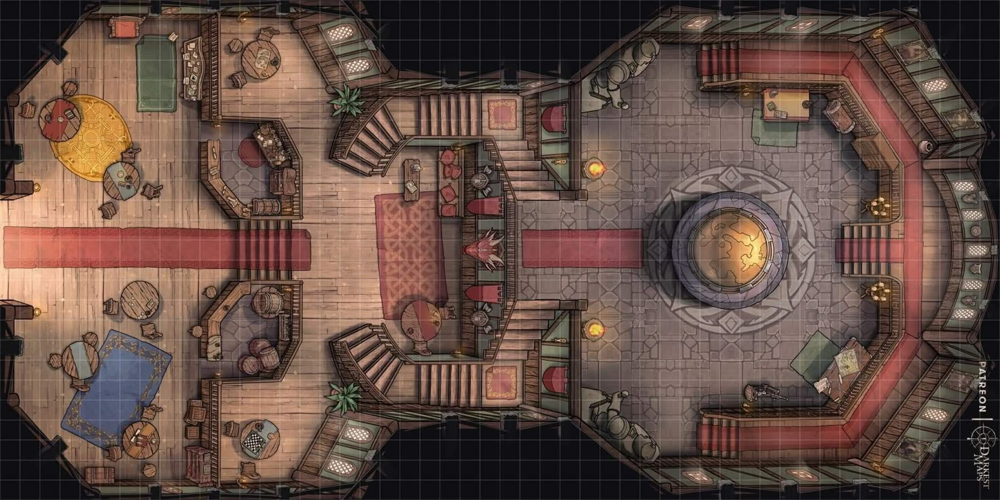
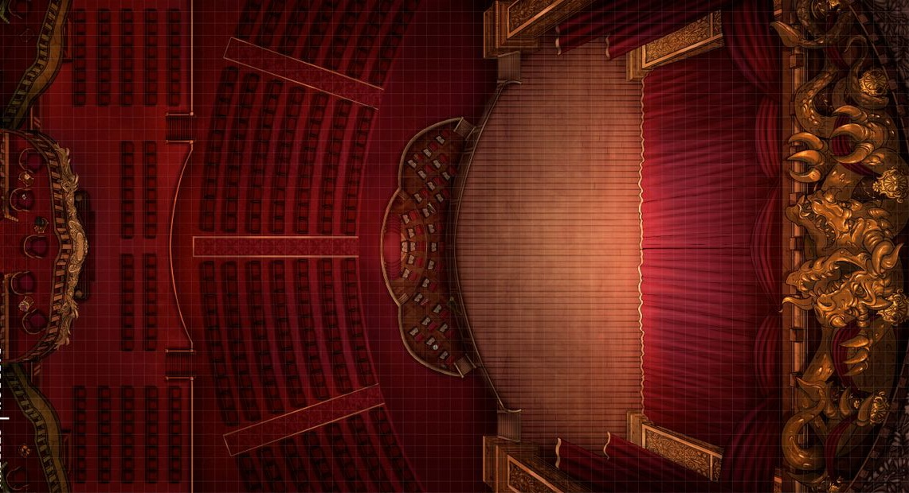
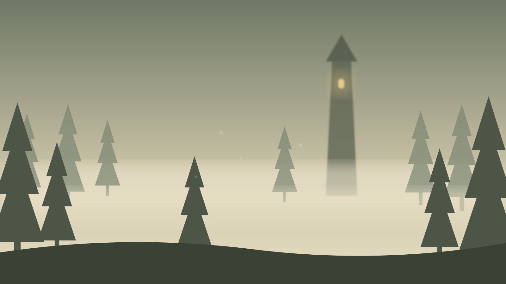
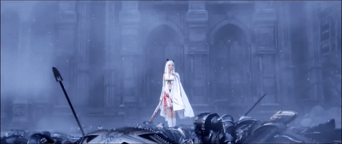

‹
Voltar





+
Claro
Escuro
Tela cheia
Iniciativa
RODADA
1
Ordenar
Próximo
▶
Sem música
música do mapa
Taverna
Exploração
Batalha
Mistério
+ minha
Chuva
Vento
Fogueira
Passos
Porta
Espada
Magia
Moedas
Trovão
Rugido
d4
d6
d8
d12
d20
-